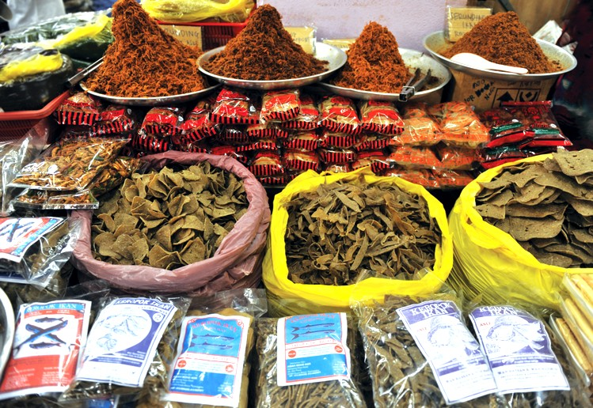 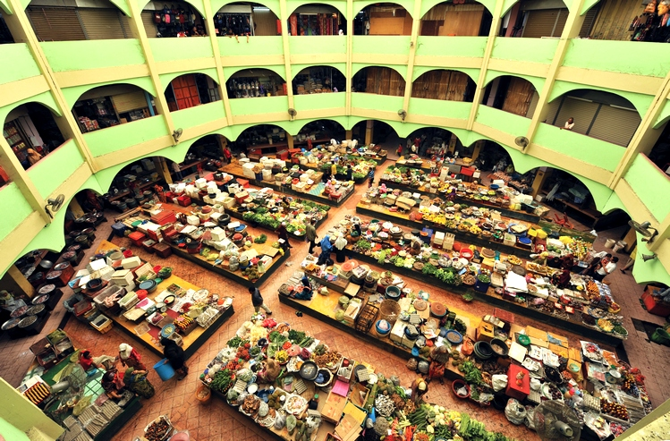
位於吉蘭丹首府哥打峇魯 PINTU PONG 路的中央市場，這裡大部份的商業活動，皆是由具有企業家精神的婦女來經營的。 這個多姿多彩的市場，喧鬧又有著許多商業活動。許多婦女就地坐在草蓆上，就開設售賣新鮮的蔬菜、魚類、加工食品及糖果蜜餞等甜食。
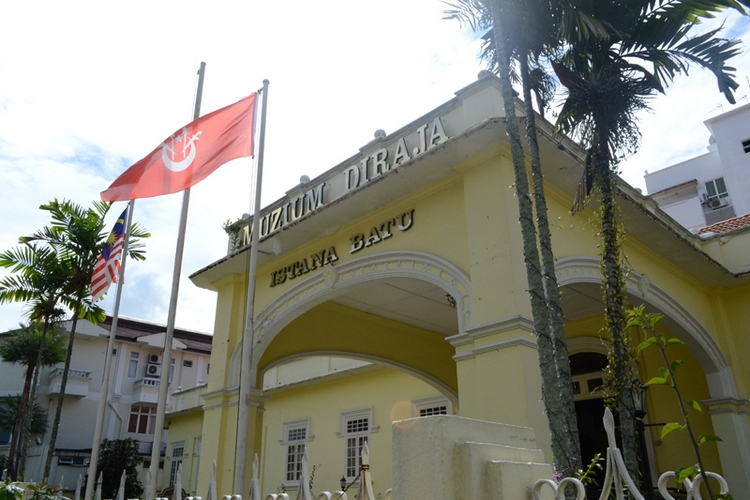 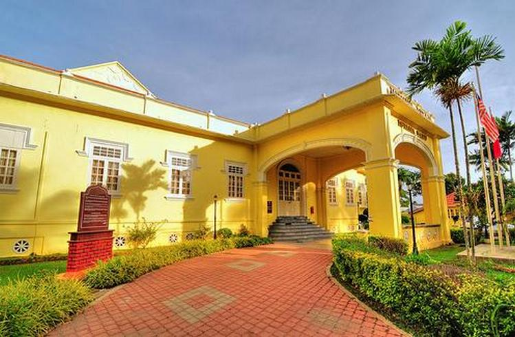 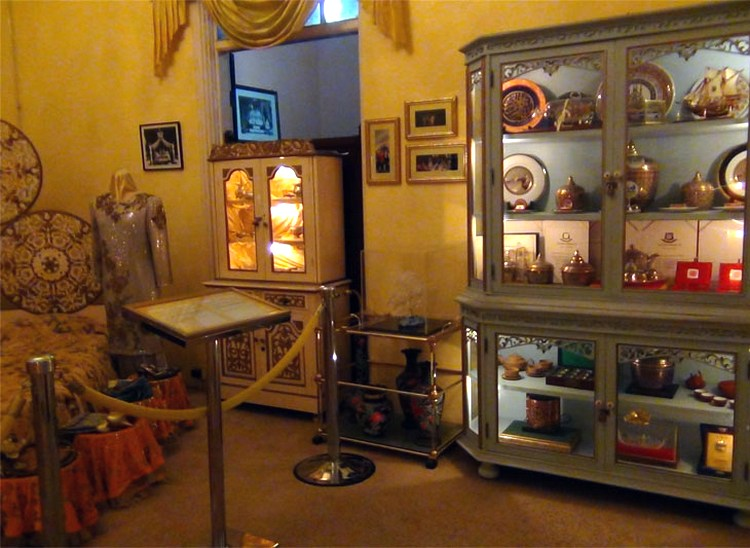 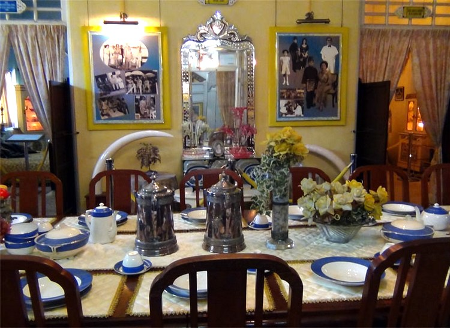
皇室博物館建於1939年。它原是一座皇宮，作為皇室婚宴的場合。歷任蘇丹的王位標識皆被收藏於此，這裡亦收藏皇室家族的銀器及傢俬等。

此建築物建於1887年，原是一座木造皇宮，稱為JAHAR皇宮。此棟擁有鍛鐵樓梯的木造皇宮是以其吉蘭丹人的傑出木雕而聞名遐邇。博物館內展示了皇宮生活的點點滴滴。
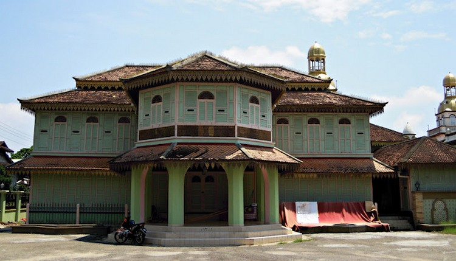 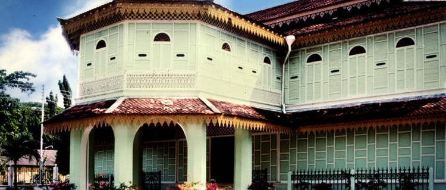 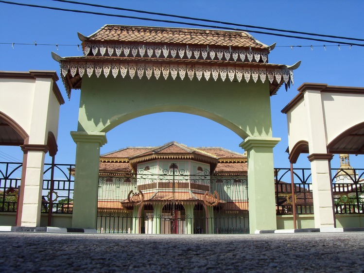
近吉蘭丹州的整個伊斯蘭歷史發展可以在此得出全貌。這裡原是吉蘭丹州第一所傳授伊斯蘭教育的學校。 此館展示了伊斯蘭藝術和手工藝品、先知穆罕默德隨身物品的相片以及具有伊斯蘭歷史意義之地點的圖片等。
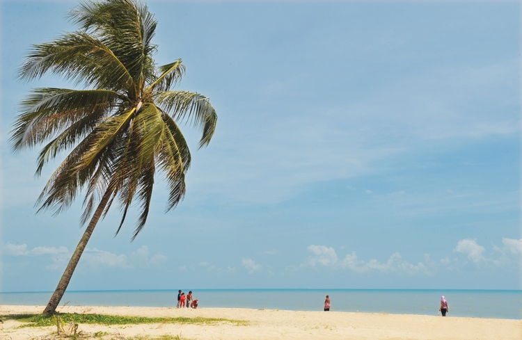 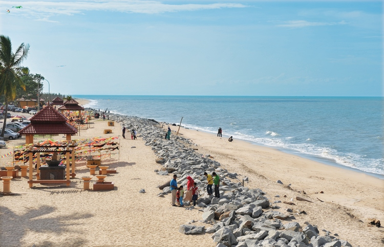
 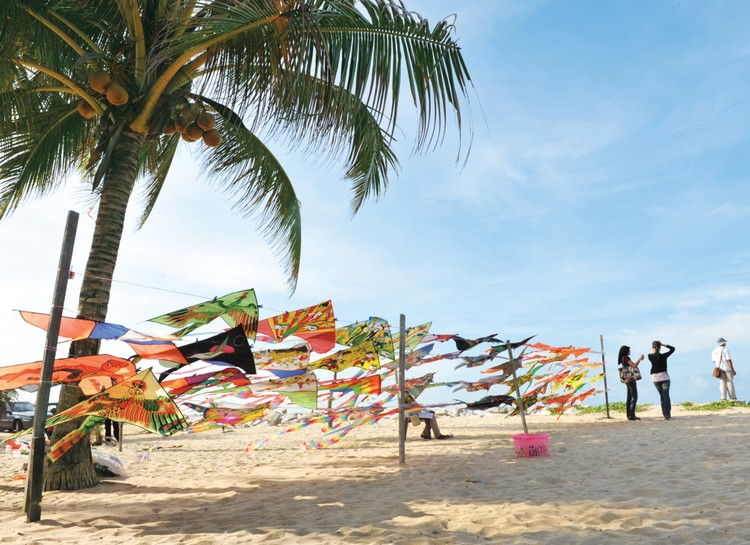
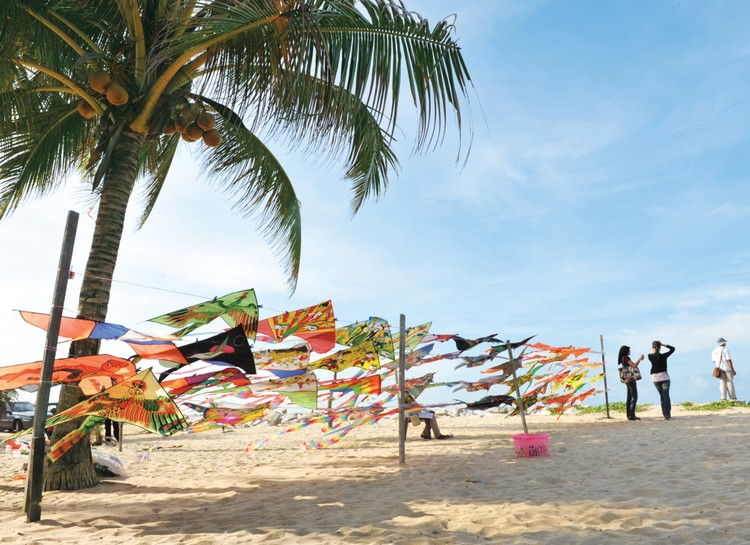
吉蘭丹最著名的海灘是位於哥打峇魯以北，大約10公里處的PANTAI CAHAYA BULAN，此處擁有閃閃發亮的沙灘。 這裡以前叫作“熱情之愛海灘”BEACH OF PASSIONATE LOVE，沙灘上種滿了木麻黃及棕櫚樹。
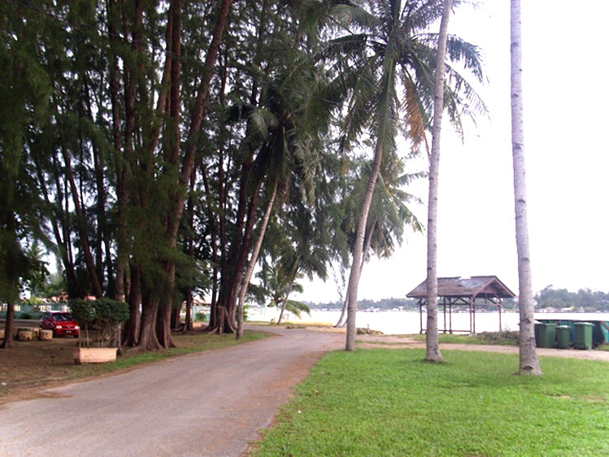 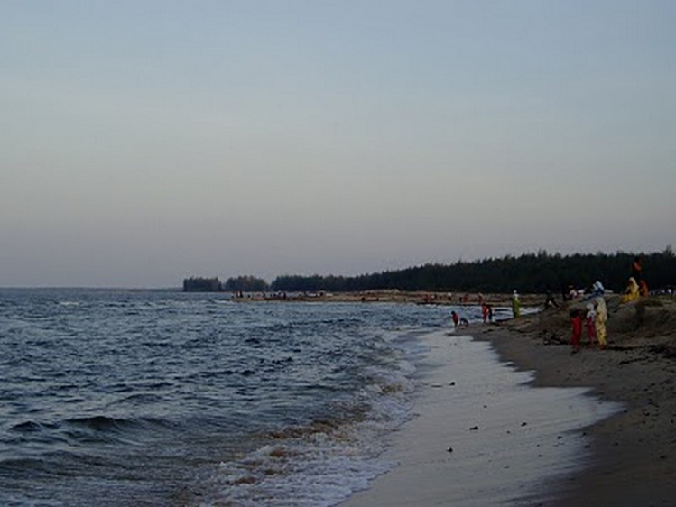
這裡是另一個著名海灘，距離哥打峇魯大約7公里，非常靠近泰國邊界。國際風箏大賽就在此地舉行，許多賞心悅目的大型風箏(WAU)在此爭豔鬥麗，令人目不暇給。 大部份參賽者的風箏都是親手製造的，包括各種大小及形狀不一的風箏，其中最普遍的是圓月風箏WAU BULAN。大型風箏一般需要特別的操作技巧，放大型風箏的整個過程必須仰賴長久的經驗，才能收放自如。
 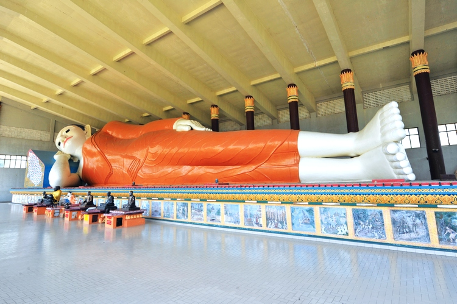
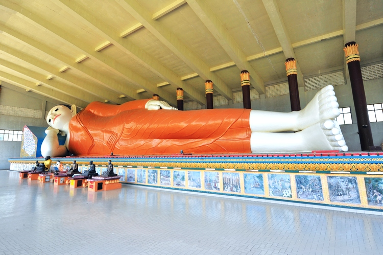
以東南亞最大坐佛而馳名的馬來西亞吉蘭丹州坐佛寺Wat Machimmaram，獲吉蘭丹州政府頒發的「非回教徒膜拜場所之最佳建築設計獎」。 坐佛高有九十九尺，長一百六十五尺及深七十三尺，除了是東南亞最大的坐佛像外，也是亞洲的三大坐佛之一。 臥佛寺最初稱為“菩提樹佛寺”，取名於該寺裡的一棵菩提樹。據說，菩提樹是源自斯里蘭卡，並由近代住持普曇普法師在一百多年前栽種的。 目前，它是丹州最老、最大的一棵智慧之樹。後來常住僧眾們籌建了臥佛像，而以“臥佛寺”命名。由現任住持曇華法師率領6位法師，于1973年啟建臥佛像。整個工程耗資馬幣35萬令吉左右，並於1979年完成建佛工程。 臥佛長40尺、高11尺、寬9尺，為東南亞最大的臥佛，在世界排名第二。